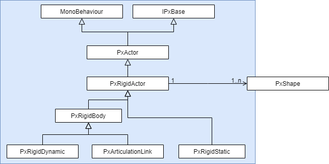
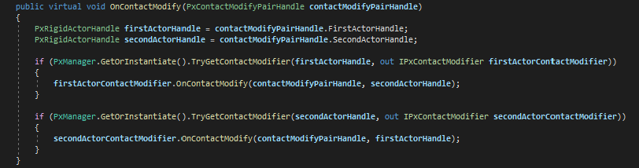
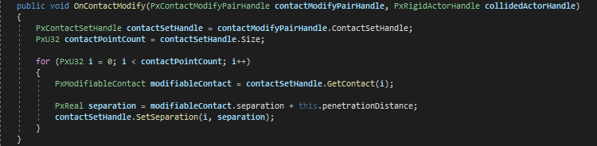
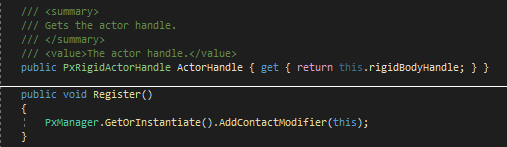
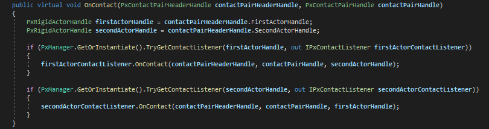
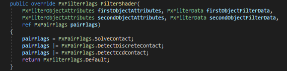

Legal Information and Links
Note: this plugin is in Beta version and requires Windows 64-bit (Android and Linux support planned).
Licence: https://unity3d.com/legal/as_terms
The package contains a very nice gravity gun model created by CGenesis: https://www.cgtrader.com/cgenesis
It also uses a great buggy model created by Kamil Albert Bujak and that you can find here: https://www.cgtrader.com/zhabovy
Thanks to them for giving their agreement so that their creations can be used in this plugin.
Get Started
The diagram below describes the part of the package that concerns PhysX.

The native plugin is located here: Ev4sio/Assets/Plugins. It makes C++/C# interoperability possible.
The Ev4sio.Core module is composed of two layers:
- Ev4sio.PhysX.Native is the low level layer. It is independent of the upper layers and allows connection with the native plugin. The elements that compose it can be used directly but it is very risky since the slightest error of instantiation/destruction of native elements can result in a crash of Unity.
- The Ev4sio.PhysX.Assets layer is there to facilitate the use of the low level features. This is where we can find the PxManager singleton that we will talk about next. The objective here is to reproduce the global structure of the PhysX SDK and to automatically manage the initialization and the instantiation / destruction of the different elements of the simulation.
The Ev4sio.Physics module provides higher level features as well as usage examples.
Ev4sio Window
When opening Unity for the first time after the installation of the package, the Ev4sio window appears automatically.

It is possible to prevent it from reopening on subsequent starts by using the option at the bottom. You can also open this window using the menu Window/Ev4sio.
PxManager Singleton
When Unity is opened for the first time with the package, various assets essential for the tool are also automatically created. They are stored in the Resources directory.

One of these elements is a singleton named PxManager.
This singleton is of type SingletonScriptableObject and is saved in the Singletons directory. All singletons of this type are located in this directory.
PxManager is essential when using this plugin. It gives access to some settings and to the various PhysX components of the different scenes.
Here are its settings as they appear in the Inspector.

We can see the references to default assets that were also created automatically and added to the PxAssets directory.

These different components can be adjusted or even replaced if necessary. As their names indicate, they will be used by default by the other components.
PhysX is designed to produce correct results regardless of the units of length or mass, so long as inputs use those units consistently. However, there are certain tolerances values whose defaults need to be adjusted depending on the units. In order to ensure that these tolerances default to reasonable values, adjust the parameters ScaleLength and ScaleSpeed. You should set them based on the typical size of objects in your simulation. For example, if you are working with objects of size approximately one meter, but in units of centimeters, you should set the scale values as follows:

It is important to use consistent scale values everywhere in your application.
Use the Minimal Additional Components parameter to avoid linking the code of some PhysX features that are not always used in order to save memory. Currently the optional features are the articulations and the height fields. By default this flag is disabled and you can use these features.
The Use Vehicle Library checkbox allows the use of the vehicle module. This module is described in the Vehicles section. By default the flag is disabled so you cannot use vehicles.
With the Use Visual Debugger checkbox you can visualize, debug and profile your simulation using the PhysX Visual Debugger. But for that you must first have installed and launched the application: https://developer.nvidia.com/physx-visual-debugger

This tool provides a graphical view of the PhysX scene and includes various tools to inspect and visualize variables of every PhysX object. Additionally it can also record and visualize memory and timing data. You can refer to its detailed built-in help for more information on the usage of the GUI.
For the display to match that of Unity, you need to set the Chirality parameter to Left-Handed.
All these settings can be found in the Ev4sio window, by clicking on PhysX 4.1.2 Manager.

Default Assets
All the default assets are of type ScriptableObject. They are data containers. Once set, this type of asset can be used by multiple components at once.
PxDefaultAllocator
This is the default implementation of the allocator interface required by the PhysX SDK.

AreComponentsInstantiated indicates if the components which are necessary for this asset have been instantiated. You will see this flag on all the elements that depend on other associated components, such as, for example, native instances of the PhysX API, which are accessible through handles.
DisplayDataAllocationInfo allows you to display information about the allocations made in PhysX.
PxDefaultCpuDispatcher
This is a default implementation for a CPU task dispatcher.

PhysicalCoreCount indicates the number of physical cores available. You can set the number of CPU used by the simulation via the Thread Count setting.
PxDefaultMaterial
This is a physics material of type PxMaterial that will be used by all objects if you do not apply a specific one to them.

You can create other PxMaterial assets using the menu Assets/Create/Ev4sio/Core/PxMaterial.
PxDefaultScene
This is a PxScene and the central asset to perform the simulation.
A PxScene contains a collection of bodies and constraints which can interact. It simulates the behavior of objects over time. Several scenes may exist at the same time, but each body or constraint is specific to a scene. They may not be shared.
Here is the list of its settings as they appear in the Inspector.

Frequency is used to adjust the simulation frequency of the scene. If its value is zero, the simulation frequency corresponds to the FixedUpdate frequency. Be careful to use a reasonable value (between 60 and 100Hz) in order not to impact performance.
The Gravity value will be applied to all objects in the scene.
Then there is a set of callbacks, most of which are optional. They are all of type ScriptableObject. We can see three default callbacks.

The documentation will try to detail these different settings but you can also refer to the official documentation provided by NVidia.
https://gameworksdocs.nvidia.com/PhysX/4.1/documentation/physxguide/Manual/API.htmlScene Manager
The second part of the Ev4sio window concerns the management of the current scene.
To simulate the tool components you have to create a SingletonMonoBehaviour in your scene. To do this, click on the CreateSceneSingleton button.


Unlike PxManager, this singleton is a MonoBehaviour. It allows the updating of the different components which will be described later. Indeed, no other component of this tool uses the classic Update and FixedUpdate methods of a MonoBehaviour and they need this singleton to be updated. The objective is to have a better control of the life-cycles.
At this time, the tool has been initialized and the scene is ready for the simulation. We are now going to detail the different components that you can put in your scene.
Rigid Actors
The rigid actors are the elements that are associated with shapes allowing them to collide with their environment.
You can easily see the correspondence with the original architecture:
https://gameworksdocs.nvidia.com/PhysX/4.1/documentation/physxguide/Manual/RigidBodyOverview.htmlPxRigidStatic
Here is the user-friendly method to add an infinite static plane to our scene.
After selecting the scene, right click and use the menu GameObject/Ev4sio/Create ‘PxRigidStatic’ GameObject/With ‘PxPlaneGeometry’

It creates a game object with a PxRigidStatic component and its associated PxPlaneGeometry (of type PxShape).

Note: gizmos of the different shapes are displayed in red color.
See the Shape and Geometries section for more details on a PxShape.
Here is another example of a static object creation using a height field.


Note: it is possible to achieve the same result by creating each component manually and associating them with each other.
PxRigidDynamic
In the same way we can easily add a dynamic component and a shape to an existing game object, provided it has a mesh filter component.


If we had used the option With 'PxConvexMeshGeometry’:

A PxActor component is a MonoBehaviour. You can also add it manually to a game object using the Component menu Ev4sio/Core/PxActor/… In this case your actor has no shape and cannot be simulated. You must associate at least one shape with it.
PxArticulationLink
This type of rigid body concerns the articulations. It will be discussed later.
Shape and Geometries
A PxShape is also a MonoBehaviour. Unlike the architecture of PhysX, the different geometries derive from it. In PhysX, shapes and geometries are implemented in separate classes but they have been grouped in the plugin to facilitate their edition.

There are two categories of shapes.
The primitives (PxBoxGeometry, PxCapsuleGeometry, PxPlaneGeometry and PxSphereGeometry) which contain all of the data.
The meshes or height fields (PxConvexMeshGeometry, PxTriangleMeshGeometry and PxHeightFieldGeometry) for whom the data is contained in a much larger object (PxConvexMesh, PxTriangleMesh and PxHeightField respectively). You can use these objects with different scales in each PxShape type which references them.
https://gameworksdocs.nvidia.com/PhysX/4.1/documentation/physxguide/Manual/Geometry.htmlOnce again, there is a simple way to create a shape and automatically associate it with an actor. For this you have to right click on a game object already containing an actor component.


Once you have created the shapes of a rigid actor, you can edit them.

Or you can restore their original settings.

You can also edit the position of the center of gravity, represented by a green cube.

Joints
Now that we are able to add dynamic objects to our scene, we can also create mechanical joints to add movement constraints.


One of the selected game objects must contain a moveable actor. If only one game object containing an actor is selected, the joint is created between this actor and the static world. If two actors are selected then they will be constrained together by the joint.

A joint constrains the way two actors move relative to one another. In the case of a revolute joint, it constrains the origin points of the two frames to be coincident and their x-axes to coincide, but allows the two actors to rotate freely relative to one another around this common axis. A typical use for a joint would be to model a door hinge or the shoulder of a character.
PhysX supports six different joint types:
- A fixed joint locks the orientations and origins rigidly together
- A distance joint keeps the origins within a certain distance range
- A spherical joint (also called a ball-and-socket) keeps the origins together, but allows the orientations to vary freely.
- A revolute joint (also called a hinge) keeps the origins and x-axes of the frames together, and allows free rotation around this common axis.
- A prismatic joint (also called a slider) keeps the orientations identical, but allows the origin of each frame to slide freely along the common x-axis.
- A D6 joint is a highly configurable joint that allows specification of individual degrees of freedom either to move freely or be locked together. It can be used to implement a wide variety of mechanical and anatomical joints, but is somewhat less intuitive to configure than the other joint types.
The official documentation provides much more detailed information on each type of joint.
https://gameworksdocs.nvidia.com/PhysX/4.1/documentation/physxguide/Manual/Joints.htmlThe string-damper joint available in the sources of Ev4sio.Physics gives an example of implementation with the combination of two joints, and shows how the Assets and Native layers work together.
Custom Joints
Joints cover many common scenarios, but if you have use cases that are not met by the conventional joints, you can implement your own.
It is possible using the PxCustomJoint class. As an example you can find the PxPulleyJoint class in Ev4sio.Physics, which is a rewrite of a snippet provided as an example in the PhysX library. This is an advanced topic, and assumes familiarity with the mathematics underlying rigid body simulation.
Aggregates
An aggregate is a collection of actors. Aggregates do not provide extra simulation or query features, but allow you to specify that a set of actors will be clustered together, which in turn allows the SDK to optimize its spatial data operations. A typical use case is a ragdoll, made of multiple different actors. Without aggregates, this gives rise to as many broad-phase entries as there are shapes in the ragdoll. It is typically more efficient to represent the ragdoll in the broad-phase as a single entity, and perform internal overlap tests in a second pass if necessary. Another potential use case is a single actor with a large number of attached shapes.
So aggregates are used to lighten the load on broad phases. When running broad phase on the CPU, aggregates frequently improve performance by reducing the load on the core broad phase algorithm. However, it should be noted that there is some cost when aggregates overlap because these overlaps must be processed by a separate module.
If you add a component of type PxAggregate to a game object, all you have to do is press the button TryFillFromHierarchy to add all the actors that are in this game object and its children.

The maximum number of actors is currently limited to 128, and for efficiency should be set as low as possible.
If you will never need collisions between the actors of the aggregate, disable them at creation time using the Enable Self Collision checkbox. This is much more efficient than using the scene filtering mechanism, as it bypasses all internal filtering logic. A typical use case would be an aggregate of static or kinematic actors.
Note that both the maximum number of actors and the self-collision attribute are immutable.
We will now see a very simple method to create easily a set of actors placed in the same aggregate and eventually connected by joints.
As an example we will use the GravityGun prefab that you can find in the Prefabs directory.

This prefab is made up of a number of game objects prefixed by J_ or A_.
Each game object prefixed with A_ contains a mesh, via a component of type mesh filter, and its associated mesh renderer. It indicates the presence of an actor, and the mesh is used to define its shape.
Each game object prefixed with J_ has a name which starts with the name of a joint. It designates the location and orientation of a joint of this type. And the last two sections of that name each indicate which actor is connected to the other.
It is essential to respect this nomenclature so that the following feature can work correctly.
Select the root of the prefab hierarchy, right click, and choose the option Create ‘PxRigidDynamic’ GameObject option. In this example we will generate box geometries.

This action creates another hierarchy of game objects containing PxRigidDynamic and PxJoint components. Each mesh used to generate PxShape components is duplicated to avoid corrupting the prefab.


We note the automatic creation of an aggregate containing all the actors of the hierarchy, with the collisions disabled between these different actors.
If there had been only one actor in the hierarchy, the aggregate would not have been created.
If we had used the option With 'PxCapsuleGeometry’

Or With 'PxConvexMeshGeometry’

Articulations
An articulation is a single actor comprising a set of links (each of which behaves like a rigid body) connected together with special joints. Every articulation has a tree-like structure - so there can be no loops or breaks. Their primary use is modelling physically actuated characters. They support higher mass ratios, more accurate drive models, have better dynamic stability and a more robust recovery from joint separation than standard PhysX joints. However, they are considerably more expensive to simulate.
Although articulations do not directly build on joints, they use very similar configuration mechanisms.
PhysX provides two articulation implementations: maximal and reduced/generalized coordinates.
The Maximal coordinate articulation implementation is designed for game use-cases, specifically powered ragdoll simulations. As such, it supports only spherical joints with limits. This articulation implementation makes some accuracy sacrifices in favor of robustness.
The Reduced coordinate articulation implementation is designed for robotics use-cases. It supports revolute, prismatic, fixed and spherical joints. It was written to favor accurate simulation and produces results that are very close to analytic models of kinematic chains.
Maximal Coordinate Articulations
To easily create an articulation we will use the same method as before. We will once again use the GravityGun prefab.

In this case, all the articulation links created are therefore of spherical type. We can note the classic joints that have been added to close the loops.


Reduced Coordinate Articulation
Same method for the Reduced coordinate articulation implementation.


Character Controllers
You can add kinematic controllers to your scene. For this you must combine two different components. A first one which mainly manages collisions and can be of two different types, PxBoxController and PxCapsuleController, which derive from a PxController component.


This component is responsible for controlling the physics of the character. The orientation is defined by the Up and Forward vectors. They are adjustable during the play mode. The official documentation provides more information on this part of the controller.
https://gameworksdocs.nvidia.com/PhysX/4.1/documentation/physxguide/Manual/CharacterControllers.htmlWith this first component it is necessary to associate a second one, which rather concerns the game programming aspect of the controller. There is currently only the FirstPersonController type in the plugin, which derives from a BaseController component.

The first parameters are used to adjust the movement speed, expressed in meters per second.
Max Pitch Angle limits the pitch angle so that the forward direction cannot be completely vertical.
Inputs is another component, of type BaseControllerInputs. As its name suggests, it is used specifically to manage inputs. By default you must add the component ControllerInputs to your character game object.

It uses the keyboard / mouse combination but you can create your own inputs component by making it inherit from BaseControllerInputs.
A BaseController component can also grab actors if certain conditions are met. Here are the settings for this feature.

Max Distance defines the maximum distance at which the actor can be grabbed.
Enable Collision indicates whether the grabbed actor can collide or not.
When an actor is grabbed by a controller, it is flagged as a kinematic object and moves according to the movements of this controller. This mode of movement can generate vibrations, and the parameter Lerp Coefficient (value between 0 and 1) is used to visually reduce this inconvenience.
However, for an actor to be grabbed in this way by a controller, it must have at least one game object in its hierarchy allowing to describe in which relative position it can be held. This game object just has to be prefixed by C_ (for Child).

It can also be prefixed with P_ (for Parent). In this case it is the controller which becomes the child of the actor, which is then not flagged as kinematic and continues to be simulated normally. We will talk about it again in the section dedicated to the vehicles.
Advanced Collision Detection
Tuning Shape Collision Behavior
Shapes used for contact generation influence the motion of the dynamic rigid bodies they are attached to through contact points. The constraint solver generates impulsive forces at the contact points to keep the shapes resting or moving without passing through each other. Shapes have two important parameters that control how collision detection generates contact points between them, which in turn are central for their behavior when colliding or stacking: contactOffset and restOffset.

They are set using PxShape.ContactOffset and PxShape.RestOffset respectively. Neither of these values is used directly. Collision detection always operates on a pair of potentially colliding shapes, and it always considers the sum of the offsets of the two shapes. We call these the contactDistance and restDistance respectively.
Collision detection is able to generate contact points between two shapes when they are still a distance apart, when they are exactly touching, or when they are inter-penetrating and the interpenetration is considered as a negative distance. So the distance between two shapes can be positive, zero, or negative. SeparationDistance is the distance at which collision detection will start to generate contacts. It has to be greater than zero, meaning that PhysX will always generate contacts when two shapes are penetrating (unless collision detection between the two shapes is in some way completely disabled, such as with filtering). By default, when using metric units and default scaling in PxTolerancesScale, contactOffset is 0.02, which means contactDistance will work out to 4 centimeters. So when two shapes approach each other within 4 centimeters, contacts will be generated until they are again moved further apart than 4 centimeters.
The generation of contact points does not however mean that a large impulse will immediately be applied at these locations to separate the shapes, or to even prevent further motion in the direction of penetration. This would make the simulation jitter unless the simulation time step is selected to be tiny, which is not desirable for real time performance. Instead, the force at the contact increase smoothly as penetration increases until it reaches a value sufficiently high to stop any further penetrating motion. The distance at which this maximum force is reached is the restDistance, because at this distance two shapes stacked on each other will reach static equilibrium and come to rest. When the shapes are for some reason pushed together so much that they have a distance below restDistance, an even greater force is applied to push them apart until they are at restDistance again. The variation of force applied as the distance changes is not necessarily linear, but it is smooth and continuous which results in a pleasing simulation even at large time steps.
There are a few different things to consider when choosing contactOffset and restOffset for shapes. Typically the same values can be used for all shapes in a simulation. It makes sense to determine restOffset first. The goal is typically to have the graphics shapes appear to stack such that they are exactly touching, like bodies do in real life. If the collision shapes are sized to be the exact same size as the graphics shapes, a restOffset of zero is needed. If the collision shapes are an epsilon bigger than the graphics shapes, a restOffset of negative epsilon is correct. This will let the larger collision shapes sink into each other until the smaller graphics shapes touch too. restOffsets that are larger than zero are practical for example if there are problems with sliding on triangle geometry where the penetration based contact generation has more trouble producing smooth contact points than a separation one, resulting in a smoother slide.
Once the restOffset is determined, the contactOffset should be chosen to be a value a slightly larger. The rule of thumb is to make the difference between the two as small as possible that still effectively avoids jitter at the time step size the simulation uses. A larger time step will need the difference to be larger. The drawback of setting it too large is that contacts will be generated sooner as two shapes approach, which drives up the total number of contacts that the simulation has to worry about. This will decrease in performance. Also, the simulation code often makes the assumption that contact points are close to the convex shapes' surface. If the contact offset is very large this assumption breaks down which could lead to behavior artefacts.
Contact Modification
Under certain circumstances, it may be necessary to specialize contact behavior. For example to implement sticky contacts, give objects the appearance of floating or swimming inside each other, or making objects go through apparent holes in walls. A simple approach to achieve such effects is to let the user change the properties of contacts after they have been generated by collision detection, but before the contact solver. Because both of these steps occur within the scene Simulate() function, a callback must be used.
The callback occurs for all pairs of colliding shapes for which the user has specified the pair flag PxPairFlags.ModifyContacts in the filter shader.
To listen to these modify callbacks, derive from the class PxContactModifyCallback and implement the function OnContactModify.
Here is the default implementation:
If the native pointers (handles) of the two rigid actors involved in the contact are associated with contact modifiers of type IPxContactModifier, the contact information is sent back to them for processing.
Here is an example from ContactModifier.cs in the demonstration scene ContactModifier_Scene:
The association of an actor handle and a contact modifier is done in two steps:
Every pair of shapes comes with an array of contact points that have a number of properties that can be modified, such as position, contact normal, and separation. For the time being, restitution and friction properties of the contacts cannot be modified. See PxModifiableContact and PxContactSetHandle for properties that can be modified.
In our example, each point of contact is modified in order to obtain a specified penetration distance between the two actors. This penetration distance can be changed dynamically via the inspector or by using ContactModifier.PenetrationDistance.
In addition to modifying contact properties, it is possible to:
- Set target velocities for each contact.
- Limit the maximum impulse applied at each contact.
- Adjust inverse mass and inverse inertia scales separately for each body.
Conveyor belt-like effects can be achieved by setting target velocities. Best results are achieved by having target velocities running in tangential directions to the contact normal but the solver does also support target velocities in the direction of the contact normal.
The user can limit the impulse applied at each contact by limiting the maximum impulse applied at each contact. This can be useful to produce "soft" contact effects, e.g. to give the impression of energy dissipation due to compression or to limit the impulse applied on a dynamic body due to a kinematic collision. Note that limiting the maximum impulse can potentially lead to additional penetration and bodies passing through each-other.
Adjusting mass and inertia scales can be used to tune how contacts between a pair of bodies affect the bodies' linear and angular velocities respectively. Each body in the contact pair has a separate inverse mass and inverse inertia scale. These scales are initialized to 1 and can be adjusted as part of the callback. Note that these values perform local mass modification within the contact pair and affect all contacts within the pair.
Uniformly scaling a body's inverse mass and inverse inertia by the same value results in the body behaving like a body that is either heavier or lighter depending on the values used. Providing inverse mass/inverse inertia scales < 1 results in the body appearing heavier; providing scales > 1 result in the body appearing lighter. For example, inverse mass/inertia scales of 0.5 result in the body appearing to have double the mass. Providing inverse mass/inertia scales of 4 would result in the body appearing to have a quarter of its original mass. Providing inverse mass/inertia scale of 0 results in the body behaving as if it has infinite mass.
However, it is also possible to non-uniform scale a body's inverse mass and inverse inertia by providing different values to a body's inverse mass and inverse inertia scale. For example, it is possible to reduce or increase the amount of angular velocity change as a result of contacts by adjusting just the inverse inertia scale. The use-cases for this kind of modification are extremely application-dependent but may involve, for example, tuning interactions between a player's vehicle and traffic vehicles in an arcade-style driving game, where the player's car is expected to be bumped by traffic vehicles but where it would be extremely frustrating to the player if the car was to spin-out as a result of the collision. This could also be achieved by making the traffic vehicles much lighter than the player's vehicle but this may make the traffic vehicles appear "too light" and therefore damage the player's immersion.
When performing local mass modification, the impulse reported in PxSimulationEventCallback.OnContact() will be relative to the locally scaled masses of the bodies involved in that contact. Therefore, this reported impulse may no longer accurately reflect the change in momentum caused by a given contact. In order to resolve this issue, the extension methods ComputeVelocityDeltaFromImpulse and ComputeLinearAngularImpulse of the rigid body handle extract the linear and angular impulse and velocity change caused by a contact using local mass modification.
These methods return separate linear and angular impulse and velocity change values to reflect the fact that the mass and inertia may have been non-uniformly scaled. When local mass modification has been used, it may be necessary to extract separate linear and angular impulses for each contact point, for each body in the pair. Please note that these helper functions are here to provide users with accurate impulse values and are by no means mandatory. For simple use-cases, e.g. triggering effects or damage based on impulse thresholds, the single impulse value reported by the contact report should be perfectly acceptable even when local mass modification has been used. However, if local mass modification has been used and the impulse values are being used for more complex behaviors, e.g. balance control for a ragdoll, then these helper functions will most-likely be required to achieve correct behavior.
Please note that, in the case of articulations, ComputeLinearAngularImpulse will return the correct impulse applied on respective articulation link. However, ComputeVelocityDeltaFromImpulse will not return the correct velocity changes for an articulation link because it does not take the effect of any other links of the articulation into account.
In addition, the following considerations must be made when using local mass modification:
- Force thresholding for callbacks will be based on the scalar impulse value in contact reports. This was calculated using the scaled mass/inertias of the bodies so using mass scaling may require these thresholds to be re-tuned.
- Maximum impulse clamping occurs in the solver on an impulse value operating on the scaled masses/inertias. As a result, the magnitude of applied impulses calculated from ComputeLinearAngularImpulse(...) may exceed the maxImpulse in situations where mass scaling was used. In situations where uniform mass scaling was used, the magnitude of the magnitude of linear impulse will not exceed massScale * maxImpulse and angular impulse will not exceed inertiaScale * maxImpulse.
There are a couple of special requirements for the callback due to the fact that it is coming from deep inside the SDK. In particular, the callback should be thread safe and reentrant. In other words, the SDK may call OnContactModify() from any thread and it may be called concurrently (i.e., asked to process sets of contact modification pairs simultaneously).
The contact modification callback can be set from the PxScene inspector.

Contact Reporting
It is also possible to simply have access to the contact points.
In the same way, a callback occurs for all pairs of colliding shapes for which the user has specified the pair flag PxPairFlags.NotifyContactPoints in the filter shader.
You must also specify the different types of notifications that will be sent: PxPairFlags.NotifyTouchFound, .NotifyTouchPersists, .NotifyTouchLost.
To listen to these callbacks, derive from the class PxSimulationEventCallback and implement the function OnContact.
Here is the default implementation:
If the native pointers of the two rigid actors involved in the contact are associated with contact listeners of type IPxContactListener, the contact information is sent back to them for processing.
The association of an actor handle and a contact modifier is done in two steps:
See the demonstration scene ContactListener_Scene for more details.
By default collisions between kinematic rigid bodies and kinematic and static rigid bodies will not get reported. To enable these reports use the kineKineFilteringMode and staticKineFilteringMode parameters of a PxScene.

Frequently, users are only interested in contact reports if the force of impact is larger than a certain threshold. This allows to reduce the amount of reported pairs which need to get processed. To take advantage of this option the following additional configurations are necessary:
Use PxPairFlags.NotifyThresholdForceFound, .NotifyThresholdForcePersists, .NotifyThresholdForceLost instead of .NotifyTouchFound etc. in your custom PxSimulationFilterShaderCallback.
Specify the threshold force for a dynamic rigid body through PxRigidDynamic.ContactReportThreshold. If the body collides with another object and the contact force is above the threshold, a report will get sent (if enabled according to the PxPairFlags setting of the pair). If two colliding dynamic bodies both have a force threshold specified then the lower threshold will be used.
If a dynamic rigid body collides with multiple static objects, then the impact force of all those contacts will get summed up and used to compare against the force threshold. In other words, even if the impact force against each individual static object is below the threshold, the contact reports will still get sent for each pair if the sum of those forces exceeds the threshold.
Contact Reports and CCD
If continuous collision detection (CCD) with multiple passes is enabled, then a fast moving object might bounce on and off the same object multiple times during a single simulation step. By default, only the first impact will get reported as a NotifyTouchFound event in this case. To get events for the other impacts too, the PxPairFlags.NotifyTouchCcd has to be raised for the collision pair. This will trigger NotifyTouchCcd events for the non-primary impacts. For performance reasons, the system cannot always tell whether the contact pair lost touch in one of the previous CCD passes and thus can also not always tell whether the contact is new or has persisted. NotifyTouchCcd just reports when the two collision objects were detected as being in contact during a CCD pass.
Extracting Contact information
The OnContact simulation event permits read-only access to all contact points for a given PxContactPairHandle. The contact information is compressed into an appropriate format depending on certain properties, e.g. depending on the shapes involved, the properties of the contacts, materials and whether the contacts are modifiable.
As there are a large number of combinations of different formats, PhysX provides two built-in mechanisms to access the contact data. The first approach provides a mechanism to extract contacts from a user buffer, as shown in the example ContactListener.cs, using the method ExtractContacts from PxContactPairHandle.
This approach requires copying data to a temporary buffer in order to access it. The second approach allows the user to iterate over the contact information without extracting their own copy, but for the moment this feature is not available in this plugin.
This approach is slightly more involved because it requires the user to not only iterate over all of the data but also consider conditions like whether the pair has been flipped or whether impulses have been reported with the pair. However, this approach of iterating over the data in-place may be more efficient because it doesn't require copying data. It will probably be included in a future update.
Continuous Collision Detection
When continuous collision detection (or CCD) is turned on, the affected rigid bodies will not go through other objects at high velocities (a problem also known as tunnelling). To enable CCD, three things need to be happen:
- 1. CCD needs to be turned on at scene level:
- 2. Pairwise CCD needs to be enabled in the pair filter: 
- 3. CCD need to be enabled for each PxRigidBody that requires CCD:


Once enabled, CCD only activates between shapes whose relative speeds are above the sum of their respective CCD velocity thresholds. These velocity thresholds are automatically calculated based on the shape's properties and support non-uniform scales.
Contact Notification and Modification
CCD supports the full set of contact notification events that are supported with the discrete collision detection.
CCD also supports contact modification using the class PxCCDContactModifyCallback. The callback operates using the same semantics as the discrete collision detection contact modification callbacks.
As with discrete collision detection, CCD will only emit contact modification events for a given pair if the user has specified the pair flag PxPairFlags.ModifyContacts in the filter shader.
Triggers
Currently, shapes flagged with TriggerShape will not be included in CCD. However, it is possible to get trigger events from CCD by not flagging trigger shapes as TriggerShape and instead configuring the filter shaders to return the following state for pairs involving trigger shapes:

Tuning CCD
The CCD should generally work without any tuning. However, there are 4 properties that can be adjusted:
- 1. PxScene.CcdMaxPasses:
- 2. PxRigidBody.MinCcdAdvanceCoefficient
- 3. Enabling the flag DisableCcdResweep on the PxScene to disable CCD resweeps.
- 4. Enabling the flag EnableCcdFriction on PxRigidDynamic.
This parameter controls the number of CCD passes we perform. This is defaulted to 1, meaning that all objects are attempted to be updated to the TOI of their first contact. Any remaining time after the TOI of their first contact will be dropped. Increasing this value permits the CCD to run multiple passes. This reduces the likelihood of time being dropped but can increase the cost of the CCD.
This parameter allows you to adjust the amount by which the CCD advances objects in a given pass. By default, this value is 0.15, meaning that CCD will advance an object by the 0.15 * ccdThreshold, where ccdThreshold is a value computed per-shape that acts as a lower-bound of the maximum amount of time that could be consumed that before there is a chance that the object could have tunnelled. The default value of 0.15 improves the fluidity of motion without risking missed collisions. Reducing this value can negatively impact fluidity but will reduce the likelihood of objects clipping at the end of a frame. Increasing this value may increase the likelihood of objects tunnelling. This value should only be set in the range [0,1].

This can result in missed collisions as the result of ricochets but has the potential to reduce the overhead of the CCD. In general, enabling this advancement mode still guarantees that objects will not pass through the static environment but no longer guarantees that dynamic objects with CCD enabled will not pass through each-other.

Enabling this flag enables the application of friction forces in the CCD. This is disabled by default. As the CCD operates using only linear motion, enabling friction inside CCD can cause visual artefacts.
Performance Implications
Enabling CCD on a scene/all bodies in a scene should be relatively efficient but it will have some performance impact even when all the objects in the scene are moving relatively slowly. A great deal of effort has been put into optimizing the CCD and as a result, this additional overhead should only constitute a very small portion of the overall simulation time when the objects are moving slowly. As the objects' velocities increase, the CCD overhead will increase, especially if there are a lot of high-speed objects in close proximity. Increasing the number of CCD passes can make the CCD more expensive although the CCD will terminate early if the additional passes aren't required.
Limitations
The CCD system is a best-effort conservative advancement scheme. It runs a finite number of CCD substeps (defaulted to 1) and drops any remaining time. Usually, time is only dropped on high-speed objects at the moment of impact so it is not noticeable. However, this artefact can become noticeable if you simulate an object that is sufficiently small/thin relative to the simulation time-step that the object could tunnel if it was accelerated by gravity from rest for 1 frame, i.e. a paper-thin rigid body. Such an object would always be moving at above its CCD velocity threshold and could result in a large proportion of simulation time being dropped for that object and any objects in the same island as it (any objects whose bounds overlap the bounds of that object). This could cause a noticeable slow-down/stuttering effect caused by the objects in that island becoming noticeably out-of-sync with the rest of the simulation. It is therefore recommended that paper-thin/tiny objects should be avoided if possible.
It is also recommended that you filter away CCD interactions between bodies that are constrained together, e.g. limbs in the same ragdoll. Allowing CCD interactions between limbs of the same ragdoll could increase the cost of CCD and also potentially cause time to be dropped unnecessarily. CCD interactions are automatically disabled between links in an articulation.
Raycast CCD
The PhysX SDK supports an alternative CCD implementation based on simple raycasts. Contrary to the built-in CCD algorithm implemented within the PhysX SDK, this cheaper and simpler alternative version is fully implemented outside of the SDK itself.
After the traditional Simulate/FetchResults calls, the system performs raycasts from the shapes' center positions to double-check that they did not tunnel. If tunnelling is detected for an object, it is moved back to a previous position along the ray, in an overlap position. Then next frame, the SDK's contact generation takes over and generates a convincing motion. There are some subtle details not described here, but this is how it works in a nutshell.
Since it is raycast-based, the solution is not perfect. In particular, small dynamic objects can still go through the static world if the ray goes through a crack between edges, or a small hole in the world (like the keyhole from a door). Also, dynamic-vs-dynamic CCD is very approximate. It only works well for fast-moving dynamic objects colliding against slow-moving dynamic objects. Other known limitations are that it is currently only implemented for PxRigidDynamic objects (not for PxArticulationLink), and for simple actors with one shape (not for "compounds").
However the implementation should be able to prevent important objects from leaving the world, provided the world is watertight. The code is very small, easy to follow or modify, and its performance is often better overall than for the built-in CCD. So it can be a valuable alternative if the default CCD becomes too expensive.
Speculative CCD
In addition to sweep-based CCD, PhysX also provides a cheaper but less robust approach called speculative CCD. This approach functions differently to the sweep-based CCD in that it operates entirely as part of the discrete simulation by inflating contact offsets based on object motion and depending on the constraint solver to ensure that objects do not tunnel through each-other.
This approach generally works well and, unlike the sweep-based CCD, it is legal to enable speculative CCD on kinematic actors. However, there are cases where it can fail to ensure objects do not pass through each-other. As an example, if the constraint solver accelerates an actor (as a result of a collision or joint) such that the actor passes entirely through objects during that time-step, speculative CCD can result in tunneling.
To enable this feature, raise the EnableSpeculativeCcd flag on the rigid body that requires CCD:

Unlike the sweep-based CCD, this form of CCD does not require settings to be raised on either the scene or on the pair in the filter shader.
Note that this approach works best with PCM collision detection. It may not function as well if the legacy SAT-based collision detection approach is used.
This feature can work in conjunction with the sweep-based CCD, e.g. if a fast-moving kinematic has speculative CCD enabled but dynamic rigid bodies use sweep-based CCD. However, if speculative CCD is used on kinematics in conjunction with sweep-based CCD, it is important to ensure that interactions between the kinematic actor using speculative contacts and the CCD-enabled dynamic actors do not also enable sweep-based CCD interactions otherwise the sweep-based CCD may overrule the speculative CCD, leading to poor behavior.
Persistent Contact Manifold (PCM)
The PhysX SDK provides two types of collision detection:
- 1. Default collision detection
- 2. Persistent Contact Manifold (PCM)
The default collision detection system uses a mixture of SAT (Separating Axis Theorem) and distance-based collision detection to generate full contact manifolds. It generates all the potential contacts in one frame, so it lends itself better to stable stacking. This approach is stable for small contact offsets and rest offsets but may not generate the correct contact points when large offsets are used because it approximates the contact points in these situations by plane shifting.
PCM is a fully distance-based collision detection system. PCM generates a full manifold of contacts when two shapes first come into contact. It recycles and updates the existing contacts from the previous frame in the manifold and then it generates a new contact in the subsequent frame if the shapes move relative to each-other more than a threshold amount or if a contact was dropped from the manifold. If too many contacts are dropped from the manifold due to a large amount of relative motion in a frame, then full manifold generation is re-run. This approach is quite efficient in terms of performance and memory. However, because PCM potentially generates fewer contacts than the default collision detection, it might reduce stacking stability when simulating tall stacks with insufficient solver iterations. As this approach is distance-based, it will generate the correct contact points for arbitrary contact offsets/rest offsets.
To enable PCM, set the flag in the PxScene inspector:

Vehicles
It is also possible to create vehicles with 4 to 20 wheels.
If you want to use this feature, the Use Vehicle Library flag must be checked in the PxManager settings.

As an example we will use the Buggy prefab that you can find in the Prefabs directory.

In order for a model to be used to create a vehicle, it must meet some conditions:
- The front of the vehicle must be oriented along the Z axis.
- The vertical axis must be the Y axis.
- It is strongly recommended that all game objects have a uniform and normalized scale of (1, 1, 1).
- The name of the chassis must start with "chassis" or "Chassis".
- The name of each wheel must contain the word "wheel" or "Wheel".
The Buggy prefab respects all these conditions. In this case if you want to create a four-wheel drive vehicle, just use the command GameObject/Ev4sio/Create Vehicle GameObject/‘PxVehicleDrive4W’


A new game object prefixed by Px has been created. There are several advantages in not modifying the source model but in duplicating it to add the physics components.
First, if there was an error during the generation of the game object because an element of the source model is for example incorrectly named, we just have to solve the problem, delete the generated game object and use the command again.
Second, since the meshes are also duplicated, we can modify them without altering the source model. For example the vertices of a wheel will be modified so that their origin corresponds to the center of the wheel. We can also imagine that in the future we will be able to generate deformations without worrying about the consequences.
We can notice that different components have been added compared to the initial game object. The chassis has both a PxRigidDynamic component with associated convex mesh geometry, like a classic rigid actor, and also a PxVehicleDrive4W component. It is this component that contains the various settings of the vehicle.
You can adjust the mass of the chassis. You can see the list of wheels and axles. The Wheel Query Type parameter allows you to choose whether you want to perform raycast or sweep query to position the wheels on the ground.
Inputs is a component of type VehicleDriveInputs. In the same way as for the character controllers, this component allows you to specifically manage the inputs. By default the vehicles use the component VehicleDriveInputs.

As for the controller you can use it as an example to write your own inputs system.
The wheels also have components associated with them.

Each wheel has a convex mesh geometry and a PxVehicleWheel component which contains its various parameters. However, there is no need to make any settings here, since they are accessible via the PxVehicleDrive4W component of the chassis.
As indicated in the paragraph dedicated to the character controllers, it is possible to define a dummy relative to the vehicle on which a controller can position itself as a child. To do this, simply add a game object with the prefix P_ (for Parent) to the vehicle hierarchy and position it as desired.

In the same way, it is also recommended to add a game object prefixed by PO_ (for Parent Output) to indicate the output position of the controller when you want to exit the vehicle, in order to avoid interpenetrations.
Conclusion
This documentation is not complete but it explains the basic principles of how this plugin works. It is possible to have more information on the different parameters by hovering the mouse cursor over them in the Inspector, or by consulting the official documentation.
Here is the link again:
https://gameworksdocs.nvidia.com/PhysX/4.1/documentation/physxguide/Manual/Index.html